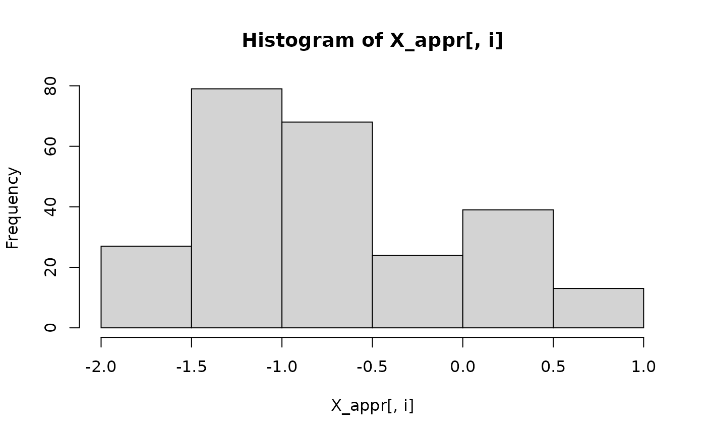
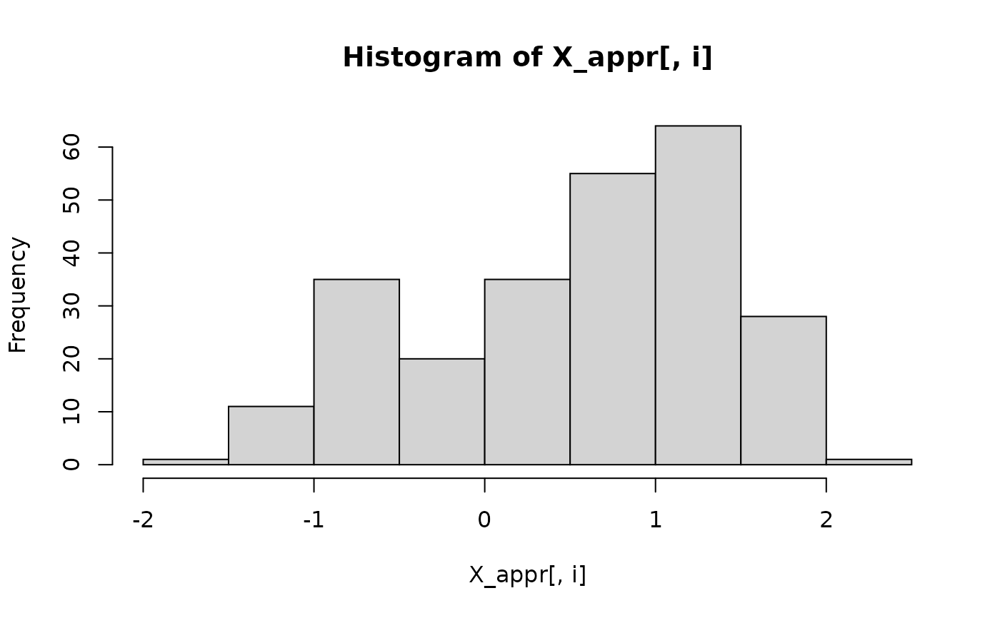
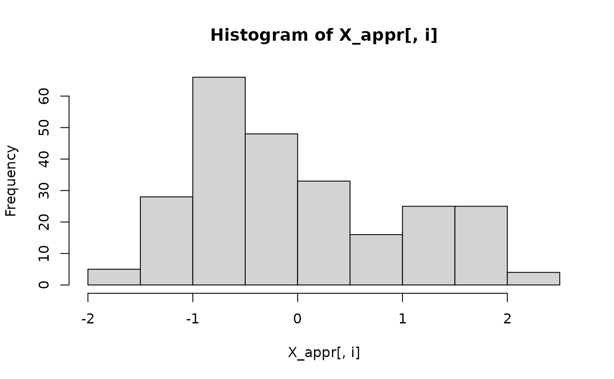
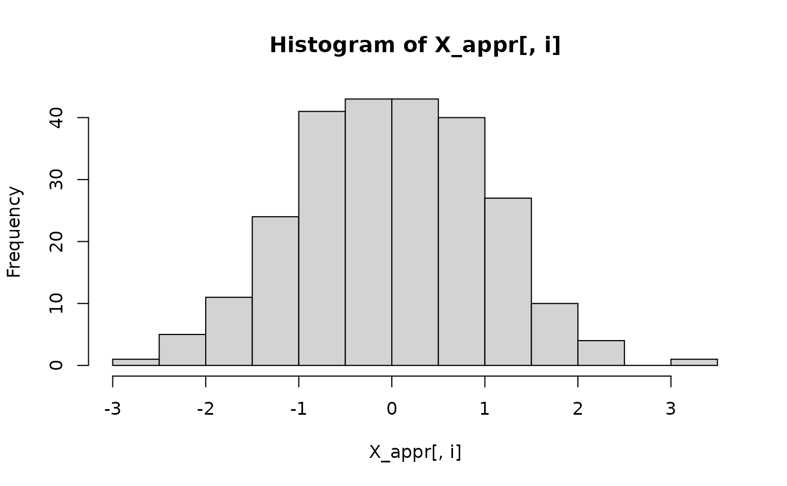

R/mixture_generator.R
mixture_generator.RdGenerates a dataset (with an additional validation sample) made of Gaussian mixtures with some of them generated by sub-regressions on others. A response variable is then added by linear regression. This function is used to generate datasets for simulations using CorReg, or just with Gaussian Mitures.
mixture_generator( n = 130, p = 100, ratio = 0.4, max_compl = 1, valid = 1000, positive = 0.6, sigma_Y = 10, sigma_X = NULL, R2 = NULL, R2Y = 0.4, meanvar = NULL, sigmavar = NULL, lambda = 3, Amax = NULL, lambdapois = 10, gamma = FALSE, gammashape = 1, gammascale = 0.5, tp1 = 1, tp2 = 1, tp3 = 1, nonlin = 0, pnonlin = 2, scale = TRUE, Z = NULL )
| n | the number of individuals in the learning dataset |
|---|---|
| p | the number of covariates (without the response) |
| ratio | the ratio of covariates generated by sub-regressions on others |
| max_compl | the number of covariates in each sub-regression |
| valid | the number of individuals in the validation sample |
| positive | the ratio of positive coefficients in both the regression and the sub-regressions |
| sigma_Y | the standard deviation for the noise of the regression |
| sigma_X | the standard deviation for the noise of the sub-regressions (all). ignored if |
| R2 | the strength of the sub-regressions (coefficients will be chosen to obtain this value). |
| R2Y | the strength of the main regression (coefficients will be chosen to obtain this value). |
| meanvar | vector of means for the covariates. |
| sigmavar | standard deviation of the covariates. |
| lambda | parameter of the Poisson's law that defines the number of components in Gaussian Mixture models |
| Amax | the maximum number of covariates with non-zero coefficients in the regression |
| lambdapois | parameter used to generate the coefficient in the subregressions. Poisson's distribution. |
| gamma | (boolean) to generate a p-sized vector |
| gammashape | shape parameter of the gamma distribution (if needed) |
| gammascale | scale parameter of the gamma distribution (if needed) |
| tp1 | the ratio of right-side (explicative) covariates allowed to have a non-zero coefficient in the regression |
| tp2 | the ratio of left-side (redundant) covariates allowed to have a non-zero coefficient in the regression |
| tp3 | the ratio of strictly independent covariates allowed to have a non-zero coefficient in the regression |
| nonlin | to use non linear structure (squared or log). If not null, it is the proba to use power pnonlin instead of log. The type is drawn for each link between covariates |
| pnonlin | the power used if non linear structure |
| scale | (boolean) to scale X before computing Y |
| Z | the binary squared adjacency matrix (size p) to obtain. If NULL it is randomly generated, based on |
a list that contains:
matrix of the learning set. p covariates following Gaussian Mixtures with some of them generated by sub-regressions on others.
Response variable vector (size n) generated by linear regression on X_appr with coefficients A and residual standard deviation sigma_Y.
vector of the of the regression generating Y_appr
Matrix of the coefficients of sub-regressions (first line: the intercepts) then B[i-1,j] is the coefficient associated to X_appr[,i] in the sub-regression that generates X_appr[,j]
Binary squared adjacency matrix of size p that describes the structure of sub-regressions. Z[i,j]=1 if X_appr[,i] explains X_appr[,j]
validation sample generated the same way as X_appr, with valid individuals.
Response vector associated to the validation sample
Vector of the standard deviations of the residuals of the sub-regressions (one value for each sub-regression)
Standard deviation of the residual of the regression that generates Y_appr and Y_test.
vector of the number of components for covariates that are not explained by others.
# dataset generation base = mixture_generator(n = 250, p = 4, valid = 0) X_appr = base$X_appr # learning sample Y_appr = base$Y_appr # response variable for (i in 1:ncol(X_appr)) { hist(X_appr[, i]) }